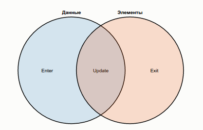
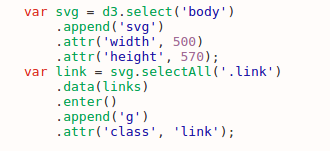
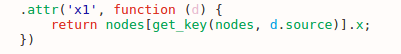
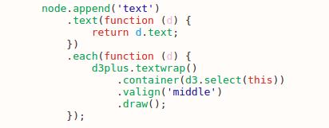
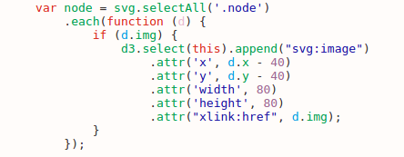

Введение
D3.js - это JavaScript-библиотека для визуализации данных. Она предоставляет
удобные утилиты для обработки и загрузки массивов данных и создания DOM-элементов.
D3 реализует подход, называемый текучим интерфейсом. При чтении кода он
выглядит как цепочка методов. Каждый метод вызывается на объекте,
который вернул предыдущий метод. Чтобы код было удобно читать, каждый вызов принято располагать на
отдельной строчке.
В ходе этого курса мы будем учиться строить диаграммы-тесты, где на каждый
вопрос может быть дано несколько ответов.
Задания постепенно увеличиваются по сложности, в каждом из них есть набор исходных данных (верхнее
окно редактора), который необходимо использовать при решении.
На заключительном четвёртом шаге диаграмма будет построена целиком. При верном выполнении этапа
открывается для прохождения
следующее задание. Текст программ сохраняется при переходе от одного задания к другому.
Задание 1
В D3 взаимодействие с документом начинается с поиска
элементов и создания выборки - обёртки набора элементов. Она даёт доступ к методам
библиотеки для модификации выбранных элементов.
Выборка создается с помощью методов d3.select() и d3.selectAll().
Полученную выборку используют для работы с элементами и для создания выборки из потомков.
Методы selection.style(), selection.attr() задают или возвращают CSS-свойства элемента,
его аттрибуты;
selection.append() добавляет потомка к каждому элементу
текущей выборки. Обратите внимание, что мы пользуемся сохранённой в переменную выборкой: вызовы
методов attr, style,
text и др. возвращают выборку, на которой они вызваны, что
типично для текучих интерфейсов.
В качестве аргументов можно передавать функции,
в этом случае они будет вызваны с параметрами d, index, а контекстом (объектом this) будет элемент, DOM-узел. Параметр d - заданный для элемента набор данных, а
index - номер элемента в выборке.

Для создания группы элементов используются связки. Идеология связок такова: вместо того, чтобы
указывать D3, как сделать что-то,
сообщите, что именно вам нужно. Вам нужны определённые элементы, связанные с определёнными данными.
Данные, связанные с уже существующими элементами, образуют выборку update
(пересечение кругов). Оставшиеся данные образуют выборку enter,
которая представляет недостающие элементы. Соответственно,
элементы без данных образуют выборку exit, предназначенную для
удаления. Мыслить связками - значит объявить связь между выборкой
элементов и данными, а затем управлять ей с помощью состояний enter, update и exit.

Для лучшего усвоения рассмотрим пример.
Пусть svg ссылается на выборку из одного созданного элемента.
Здесь links - это массив JSON-объектов.
1) svg.selectAll(".link") возвращает пустую выборку, т.к. SVG-контейнер был пуст. Родительский узел
для этой выборки - элемент SVG.
2) Пустая выборка связывается с массивом данных, порождая три выборки: enter, update и exit.
3) Метод selection.data по умолчанию возвращает выборку update; для обращения к выборкам enter и exit используются методы selection.enter и selection.exit соотвественно.
4) Недостающие элементы добавляются в родительский узел вызовом selection.append на выборке enter. Так в SVG-контейнере появляется по узлу g для каждого элемента данных.
2) Пустая выборка связывается с массивом данных, порождая три выборки: enter, update и exit.
3) Метод selection.data по умолчанию возвращает выборку update; для обращения к выборкам enter и exit используются методы selection.enter и selection.exit соотвественно.
4) Недостающие элементы добавляются в родительский узел вызовом selection.append на выборке enter. Так в SVG-контейнере появляется по узлу g для каждого элемента данных.
Задание 2
На этом шаге необходимо связать вершины и рёбра.
В массиве данных не указываются координаты рёбер, их нужно получить из массива вершин.
Для этого можно написать свою функцию, возвращающую нужный элемент массива по заданному имени, или
использовать готовую get_key().
Она вызывается с двумя аргументами: первый - массив для поиска, второй - имя вершины.
Задание 3
 Для добавления текста используется svg-элемент
text. Метод selection.text()
позволяет внести текстовое содержимое. Метод selection.each()
вызывает переданную функцию для каждого элемента в выборке. Кроме добавления текста его необходимо
выровнять по центру и разделить на несколько строк. В этом нам поможет библиотека
D3plus. Для этого контейнер с текстом необходимо располагать
после элементов-кругов или элементов-прямоугольников. Тогда иблиотека автоматически обернет текст в
форму предшествующего круга или прямоугольника.
Метод .container() говорит, содержимое какого элемента
необходимо обернуть. Метод .valign() выравнивает содержимое.
Метод .draw() оборачивает текст в заданном контейнере.
Задание 4

Для добавления изображения используется svg-элемент image.
Необходимо проверить, имеется ли нужное поле img в связанных данных при добалении элемента-
изображения. Кроме этого, если имеется изображение, следует сместить текст вершины.